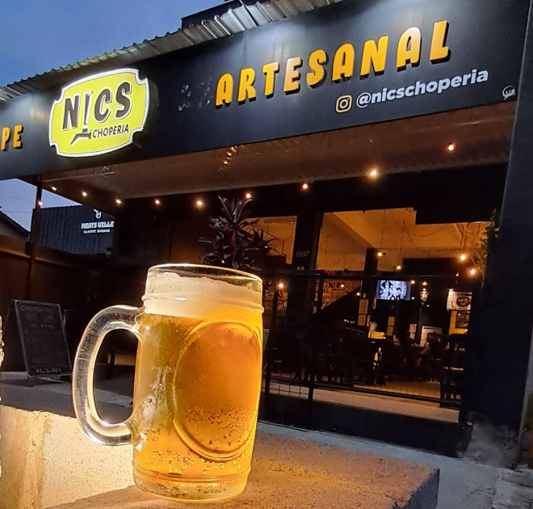

A NICS CHOPERIA é especializada em chopes artesanais.
São sempre 14 estilos de chope engatados para você escolher
e se deliciar acompanhado uma das super porções do SEO PORTUGA,
especialista em carnes defumadas. Também temos a opção de GROWLERS,
para você levar seu chope para onde quiser!!!
